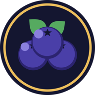

Myrtille City
Serveur Minecraft semi-RP · civil, police ou mafia
Installe le launcher : il télécharge Minecraft, les mods du serveur et ses mises à jour tout seul, puis te connecte directement à la ville.
Ce qu'il te faut
- Un compte Microsoft qui possède Minecraft: Java Edition. Les comptes non officiels ne peuvent pas se connecter.
- Environ 2 Go d'espace disque et 4 Go de mémoire vive.
- Rien d'autre : Java et les mods sont installés par le launcher.
Premier lancement
Le launcher n'est pas encore signé numériquement : ton système va te demander une confirmation la première fois. C'est normal pendant la bêta.
Windows : « Windows a protégé votre ordinateur »
- Clique sur Informations complémentaires.
- Puis sur Exécuter quand même, et suis l'installation.
macOS : « impossible d'ouvrir » ou « l'app est endommagée »
- Ouvre le .dmg et glisse Myrtille City dans Applications.
- Dans Applications, fais clic droit → Ouvrir, puis confirme Ouvrir.
- Si macOS dit que l'app est endommagée, ouvre le Terminal et tape :
xattr -cr "/Applications/Myrtille City.app"
Linux : rendre l'AppImage exécutable
chmod +x MyrtilleCity.AppImage./MyrtilleCity.AppImage
En jeu
- Connecte-toi avec ton compte Microsoft dans le launcher, puis clique sur Jouer.
- À ton arrivée, marche jusqu'à l'Hôtel de ville et tape
/inscription <métier>pour recevoir tes papiers et ta parcelle. - Le serveur est ouvert de 11 h à 3 h (heure de Paris).